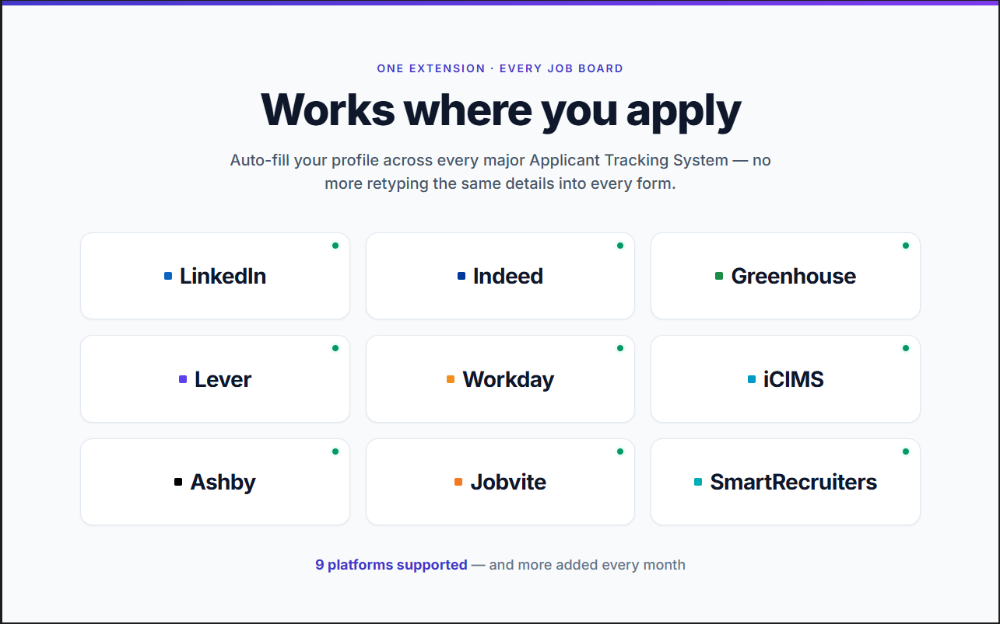

<!-- Chrome Extension / supported platforms section for 1stStep.ai
     Placement: after hero, before "How it works" -->
<section class="ext-platforms" aria-labelledby="extension-platforms-title">
  <div class="ext-shell">
    <div class="ext-heading">
      
      <p class="ext-kicker">One extension &middot; every job board</p>
      <h2 class="ext-title" id="extension-platforms-title">Works where you apply</h2>
      <p class="ext-subtitle">Auto-fill your profile across every major Applicant Tracking System &mdash; no more retyping the same details into every form.</p>
    </div>

    <div class="platform-grid" aria-label="Supported job boards and applicant tracking systems">
      <div class="platform-card"><span class="platform-brand platform-brand-linkedin"></span>LinkedIn</div>
      <div class="platform-card"><span class="platform-brand platform-brand-indeed"></span>Indeed</div>
      <div class="platform-card"><span class="platform-brand platform-brand-greenhouse"></span>Greenhouse</div>
      <div class="platform-card"><span class="platform-brand platform-brand-lever"></span>Lever</div>
      <div class="platform-card"><span class="platform-brand platform-brand-workday"></span>Workday</div>
      <div class="platform-card"><span class="platform-brand platform-brand-icims"></span>iCIMS</div>
      <div class="platform-card"><span class="platform-brand platform-brand-ashby"></span>Ashby</div>
      <div class="platform-card"><span class="platform-brand platform-brand-jobvite"></span>Jobvite</div>
      <div class="platform-card"><span class="platform-brand platform-brand-smartrecruiters"></span>SmartRecruiters</div>
    </div>

    <p class="platform-note"><strong>9 platforms supported</strong> &mdash; and more added every month</p>

    <div class="demo-panel">
      <figure class="demo-visual">
        
      </figure>

      <div class="demo-copy">
        <span class="demo-badge">Chrome extension</span>
        <h3>Tailor from the job post without breaking flow</h3>
        <p>Open a role, launch 1stStep, then generate a targeted resume, cover letter, and match score from the same workflow.</p>
        <ol class="workflow-steps">
          <li><b>1</b>Open a job</li>
          <li><b>2</b>Click &ldquo;Tailor my resume&rdquo;</li>
          <li><b>3</b>Get resume + cover letter + match score</li>
        </ol>
        <div class="ext-actions">
          <a class="ext-cta primary" href="https://app.1ststep.ai/">Try 1stStep.ai Free</a>
          <a class="ext-cta secondary" href="https://chromewebstore.google.com/detail/1ststepai-%E2%80%93-tailor-your-r/gnbjcmennlcbkmakameknfcnioohnjkp" data-chrome-web-store-url>Get the Chrome Extension</a>
        </div>
      </div>
    </div>
  </div>
</section>

